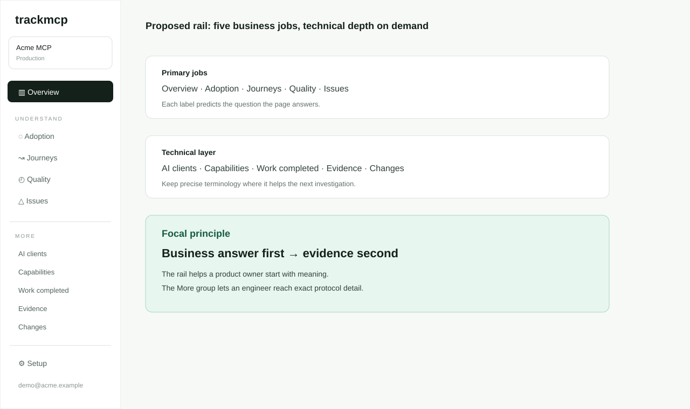
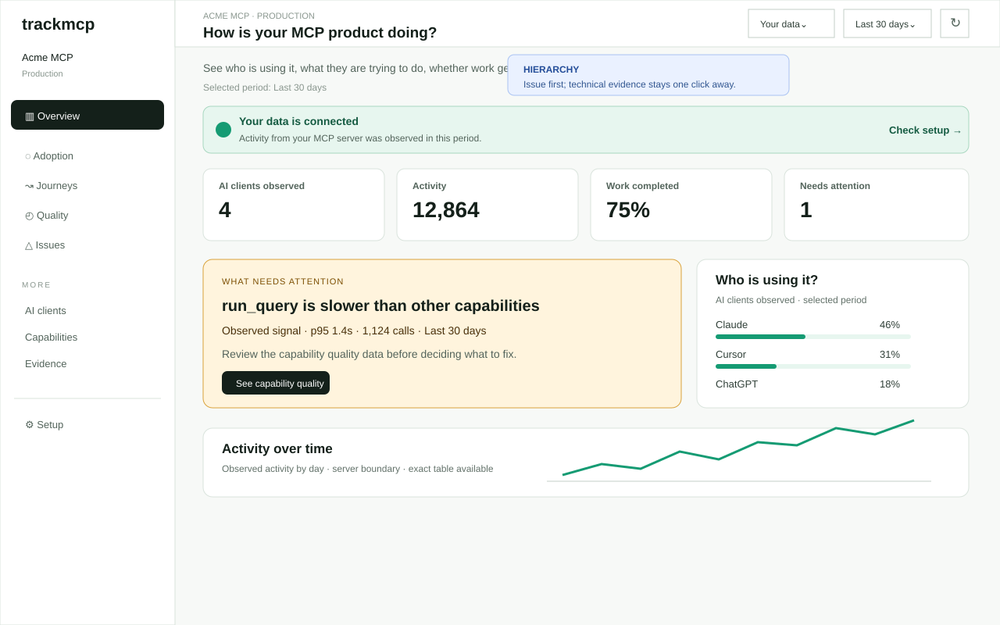
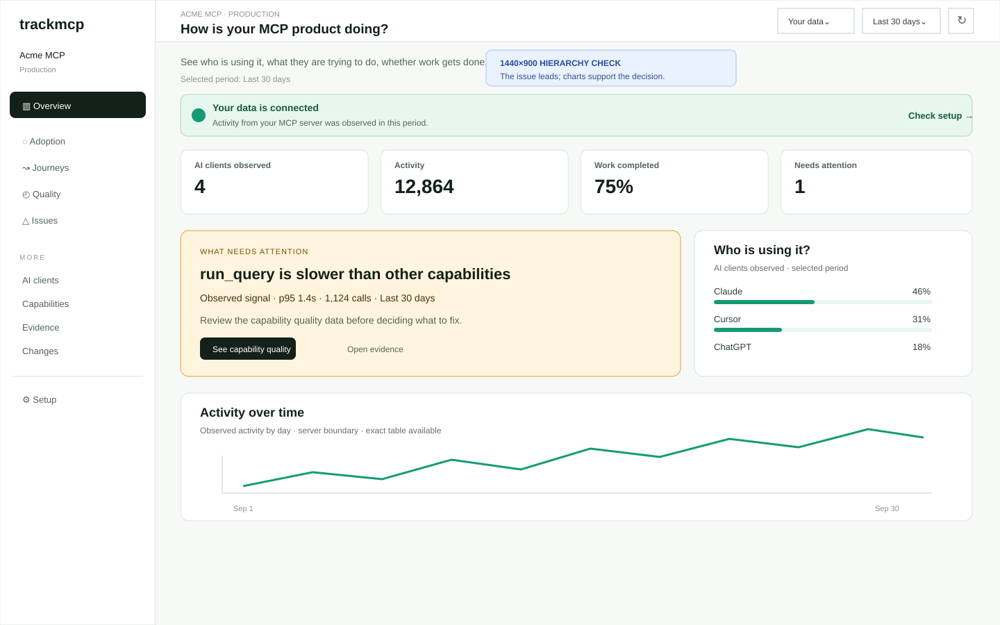
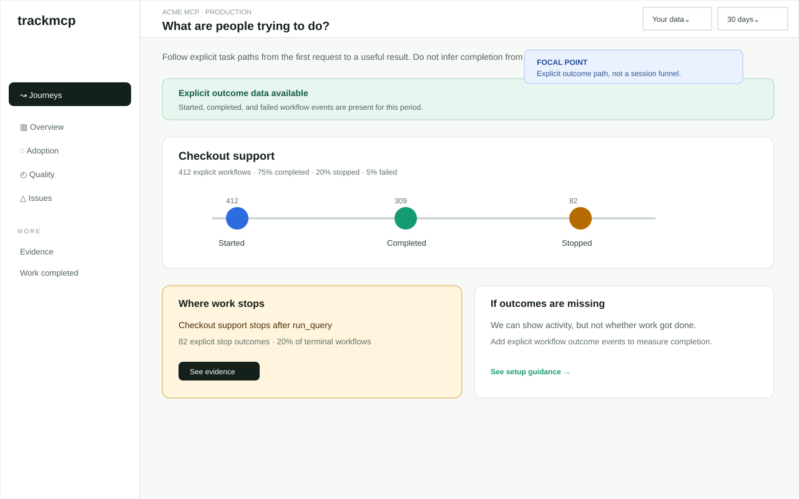
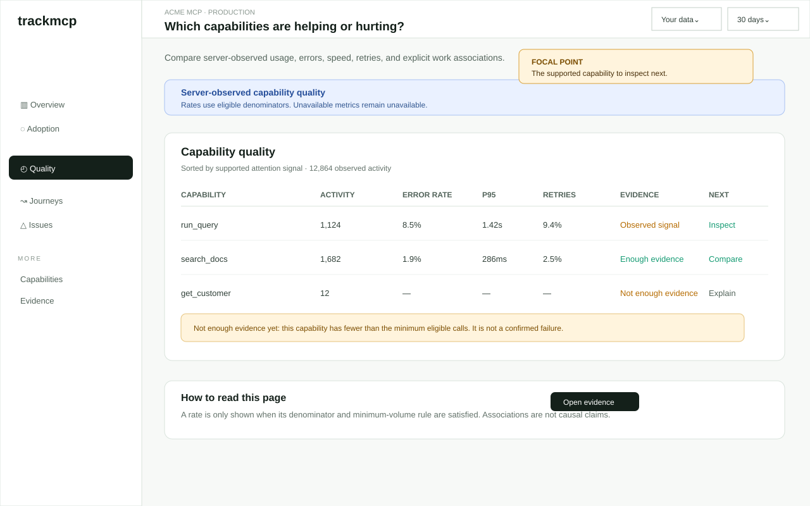
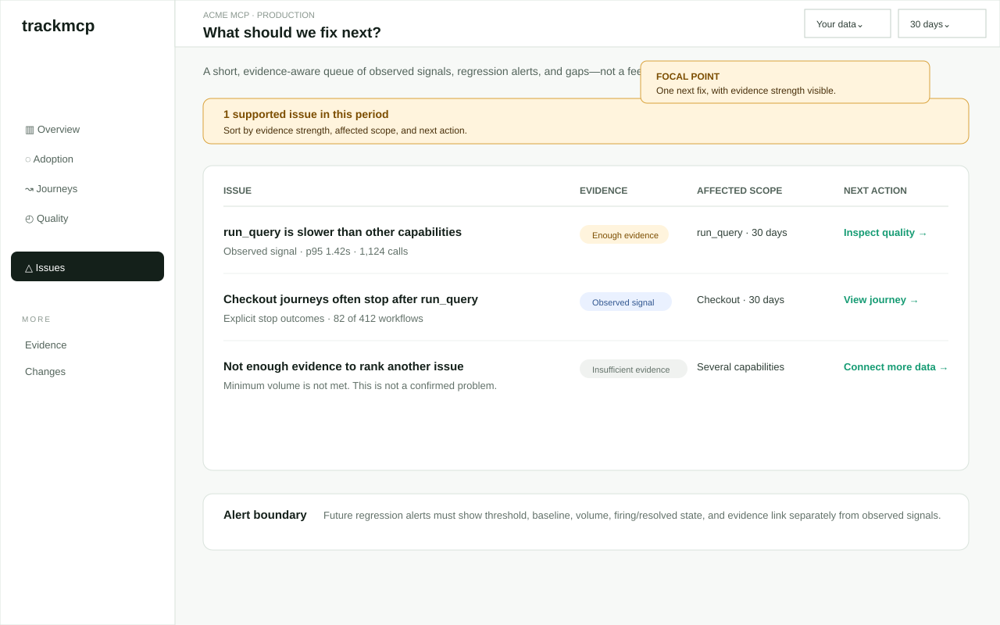
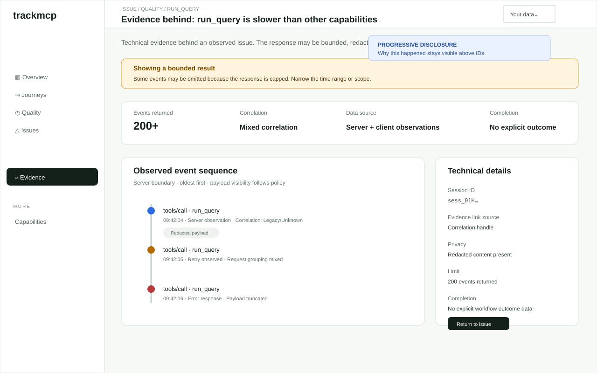
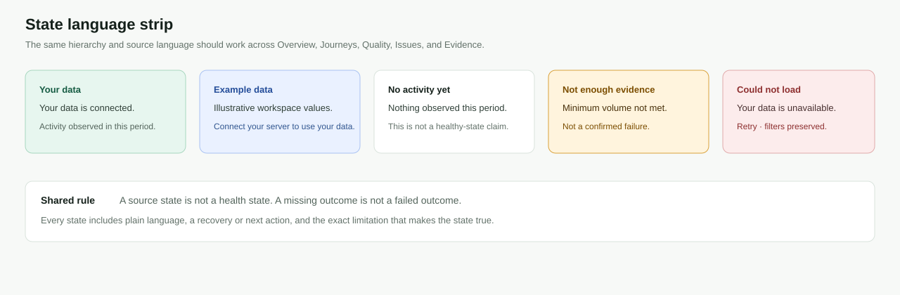
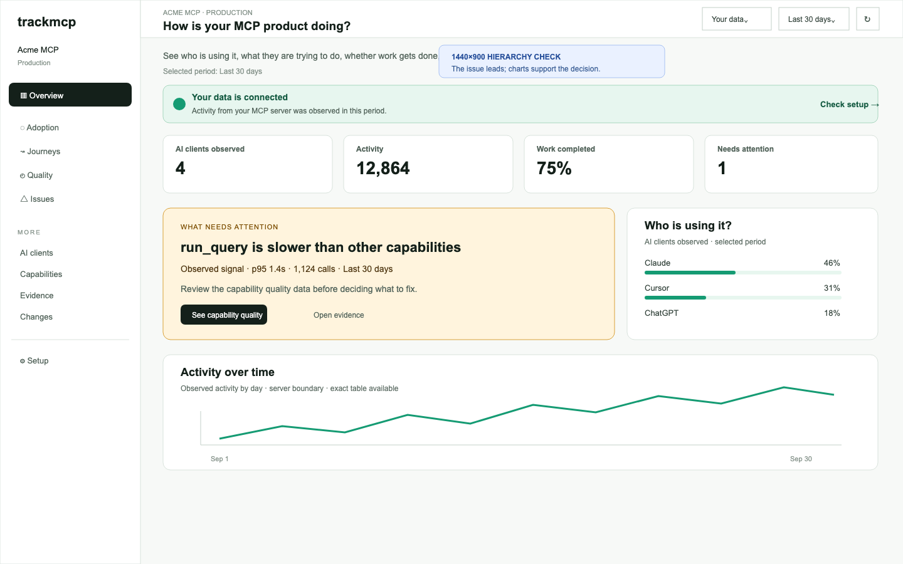

Static design artifacts only. Nothing on this page is production implementation.









evidence/current-overview-1280.png, evidence/current-overview-1440.png, and the corresponding live-empty captures.